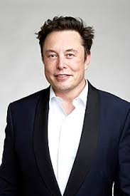

Elon Reeve Musk
One of the richest person in the world
Elon Reeve Musk FRS (/ˈiːlɒn/; born June 28, 1971) is an entrepreneur and business magnate. He is the founder, CEO and Chief Engineer at SpaceX; early-stage investor, CEO and Product Architect of Tesla, Inc.; founder of The Boring Company; and co-founder of Neuralink and OpenAI. With an estimated net worth of around US$255 billion as of December 2021,[2] Musk is the wealthiest person in the world.

"Failure is an option here.If things are not failing.you are not innovating enough."
Elon Musk inventions that have made history
- 1995 - He started by creating Zip2
- 2002 - He founded Space Exploration Technologies (SpaceX). SpaceX launched its first rocket, Falcon 1, in 2006
- 2004 - In 2004, Musk invested a significant amount in Tesla, which introduced its first electric car, the Roadster, in 2006
- 2016 - Musk also established The Boring Company (TBC) in December 2016, originally as a SpaceX subsidiary. TBC became an independent company in 2018.